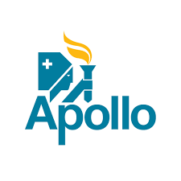

Apollo was not mainly about science. It was not even mainly about space. Apollo was about ideological confrontation and nuclear war—often described by such euphemisms as world "leadership" and national "prestige." Nevertheless, good space science was done. We now know much more about the composition, age and history of the Moon and the origin of the lunar landforms. We have made progress in understanding where the Moon came from. Some of us have used lunar cratering statistics to better understand the Earth at the time of the origin of life. But more important than any of this, Apollo provided an aegis, an umbrella under which brilliantly engineered robot spacecraft were dispatched throughout the solar system, making that preliminary reconnaissance of dozens of new worlds. The offspring of Apollo have now reached the planetary frontiers.
If not for Apollo—and, therefore, if not for the political purpose it served—I doubt whether the historic American expeditions of exploration and discovery throughout the solar system would have occurred. The Mariners, Vikings, Voyagers, Magellan, Galileo and Cassini are among the gifts of Apollo. Something similar is true for the pioneering Soviet efforts in solar system exploration, including the first soft landings of robot spacecraft—Luna 9, Mars 3, Venera 8—on other worlds.
Apollo conveyed a confidence, energy and breadth of vision that did capture the imagination of the world. That too was part of its purpose. It inspired an optimism about technology, an enthusiasm for the future. If we could go to the Moon, what else was now possible? Even those who were not admirers of the United States readily acknowledged that—whatever the underlying reason for the program—the nation had, with Apollo, achieved greatness.
When you pack your bags for a big trip, you never know what's in store for you. The Apollo astronauts on their way to and from the Moon photographed their home planet. It was a natural thing to do, but it had consequences that few foresaw. For the first time, the inhabitants of Earth could see their world from above—the whole Earth, Earth in color, Earth as an exquisite spinning white and blue ball set against the vast darkness of space. Those images helped awaken our slumbering planetary consciousness. They provide incontestable evidence that we all share the same vulnerable planet. They remind us of what is important and what is not.
We may have found that perspective just in time, just as our technology threatens the habitability of our world. Whatever the reason we first mustered the Apollo program, however mired it was in Cold War nationalism and the instruments of death, the inescapable recognition of the unity and fragility of Earth is its clear and luminous dividend, the unexpected final gift of Apollo. What began in deadly competition has helped us to see that global cooperation is the essential precondition for our survival.
Travel is broadening.
It's time to hit the road again.